Some trips are memorable because of where you went. Gettysburg became something more: it changed how we would travel from then on.
Our basecamp at Artillery Ridge
We stayed at Artillery Ridge Campground & Horse Park on tent sites 30 and 31, both with water and electric. Site 30 was a corner site and gave us plenty of room for my two-room tent, camp kitchen, and a 10-by-20-foot Easy-Up with sidewalls. Next door, my niece Tracy camped with her daughters Zoey and Kalley, while my sister Eileen had her own tent.
Right from the start, the campground impressed me. The office and store staff were friendly and helpful, and the maintenance staff we met were just as welcoming. The restrooms and showers were consistently clean—and it was the first campground where I had ever seen a firewood vending machine.
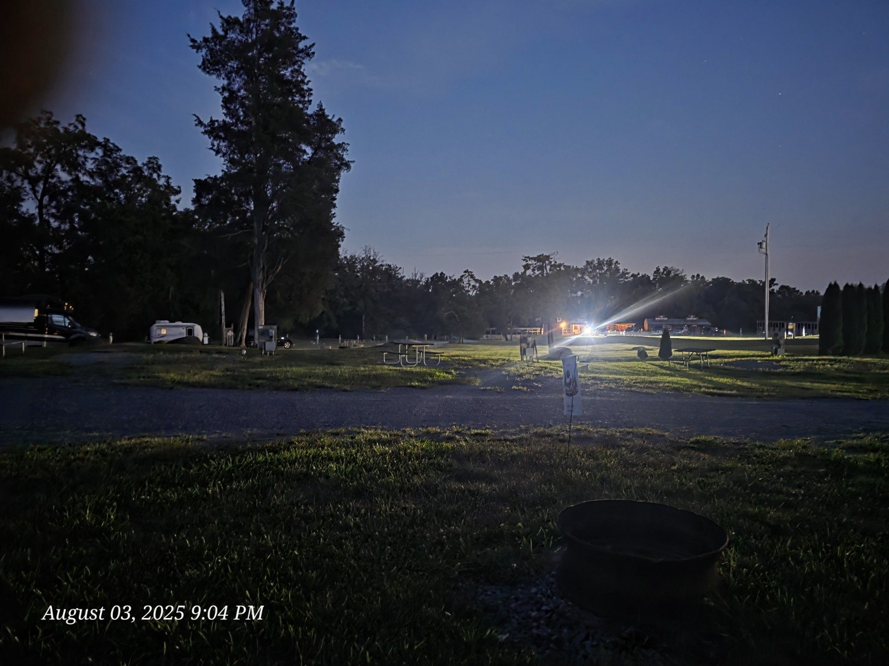
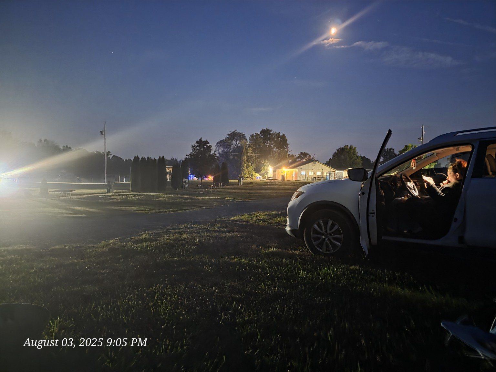
George Spangler Farm tour tickets were available right in the campground office and store.
Sunrise over historic ground
Artillery Ridge sits on ground associated with the Union Army's artillery reserve. Near our campsite, just over a stone wall, a paved trail leads toward the George Spangler Farm. That trail is the paved area visible in the foreground of our sunrise photographs.
Early in the morning, the fields were quiet and covered in mist. Knowing what had happened across this landscape made the peaceful view feel even more powerful. History was not somewhere we drove to from the campground—it was all around us before breakfast.
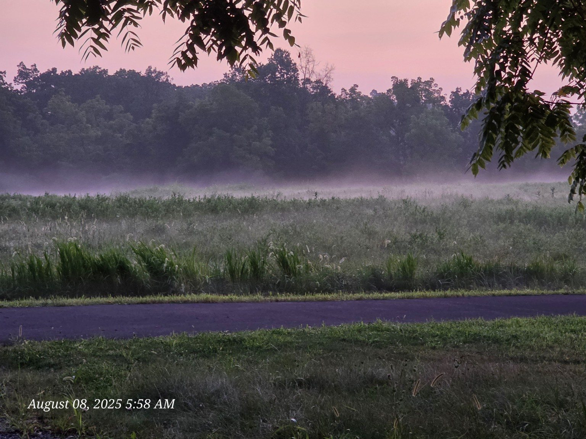
A family journey through Gettysburg
We covered a lot of ground during the trip. We took a double-decker battlefield bus tour, toured the National Military Park Museum and Cyclorama, visited the Shriver House and Jennie Wade House, and explored Little Round Top and Devil's Den.
The trip was not about checking attractions off a list. Standing in the places we had read about made the history more immediate, especially when the same ridges, fields, stone walls, and monuments appeared again later in photographs and film.
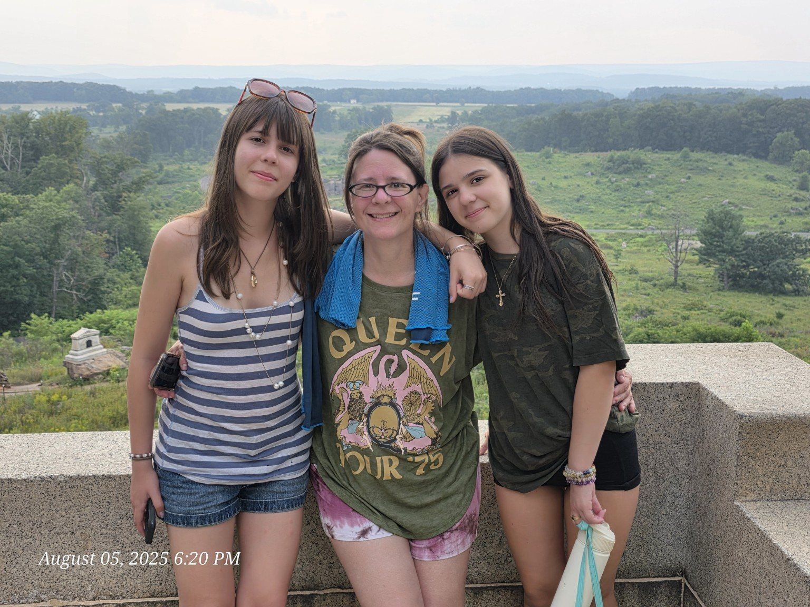
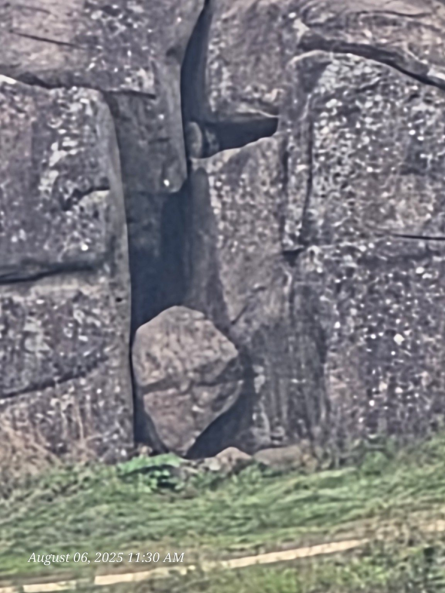
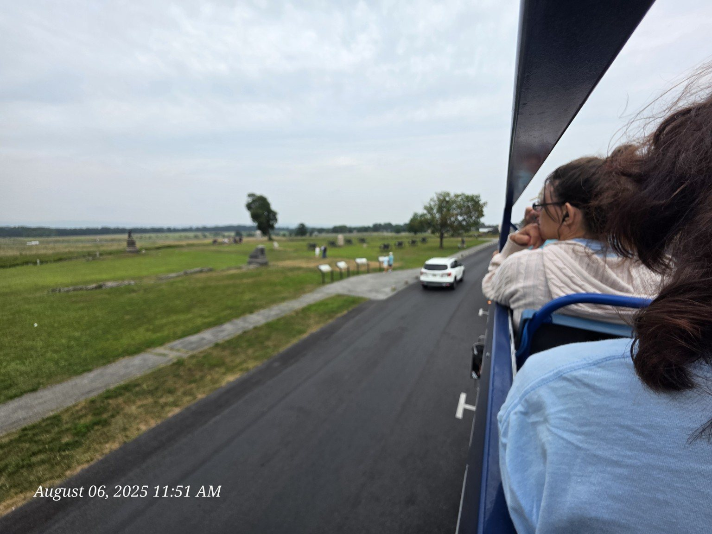
Movie night on the battlefield
Before the trip, I packed a USB-C-to-HDMI cable and a projector. One evening, we turned the back wall of the Easy-Up into an outdoor movie screen and watched Gettysburg right at the campground.
We had spent the day visiting the very places shown in the film. Watching the story unfold while camped on historic ground made this more than an ordinary campground movie night. It tied the whole trip together.
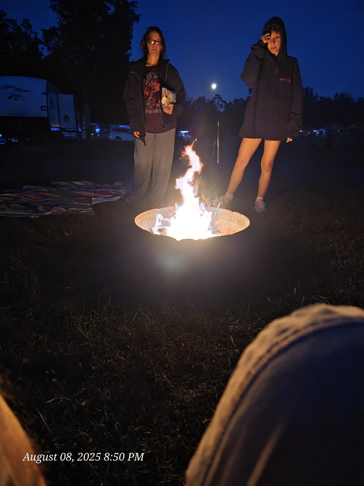
Hallowed ground
As we had done during our 2024 Rhode Island trip, we made cemetery visits part of the journey—this time, two of them. First came Gettysburg National Cemetery, followed by the cemetery where Jennie Wade was laid to rest.
“On Fame's eternal camping-ground, their silent tents are spread, and Glory guards with solemn round the bivouac of the dead.”
The words felt especially meaningful on a family camping trip. The National Cemetery was not simply another attraction. It was a place to slow down, walk among the rows of markers, and remember that the battlefield's history is measured in individual lives.
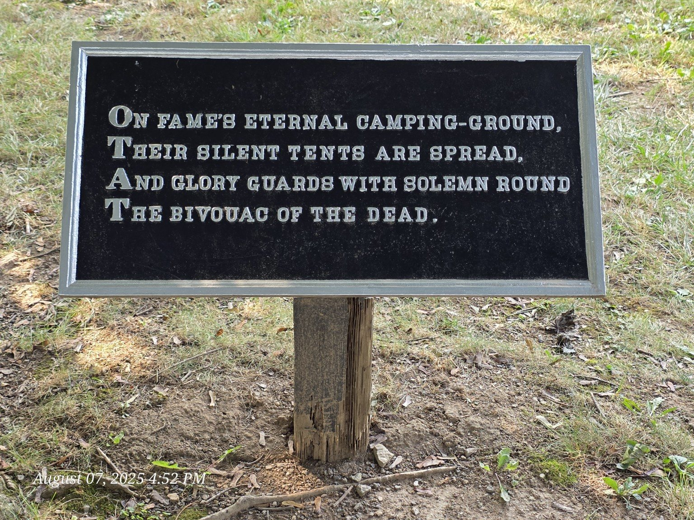
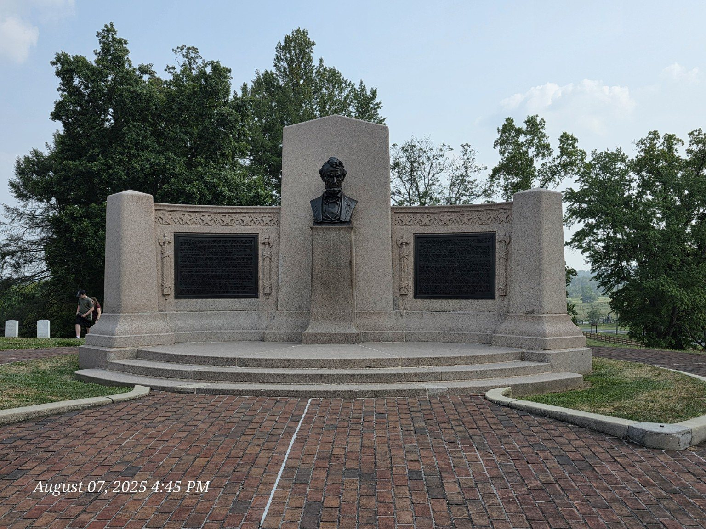
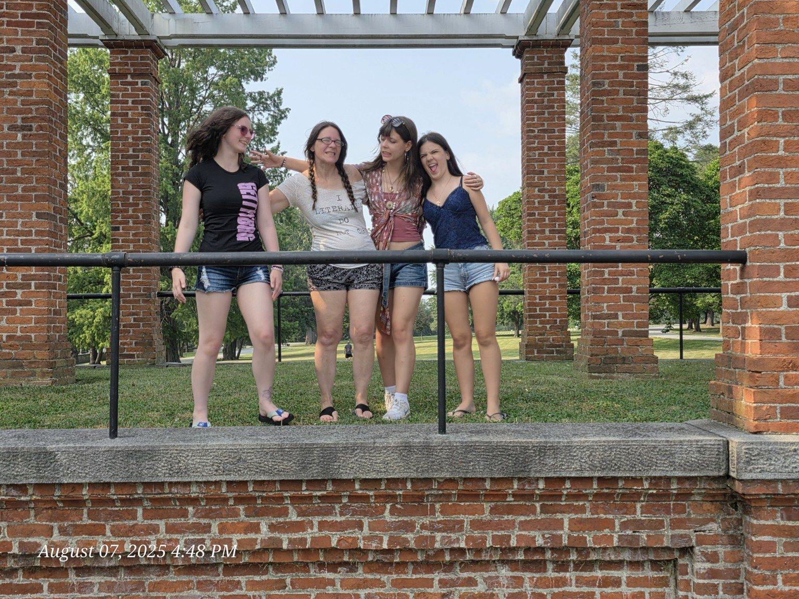
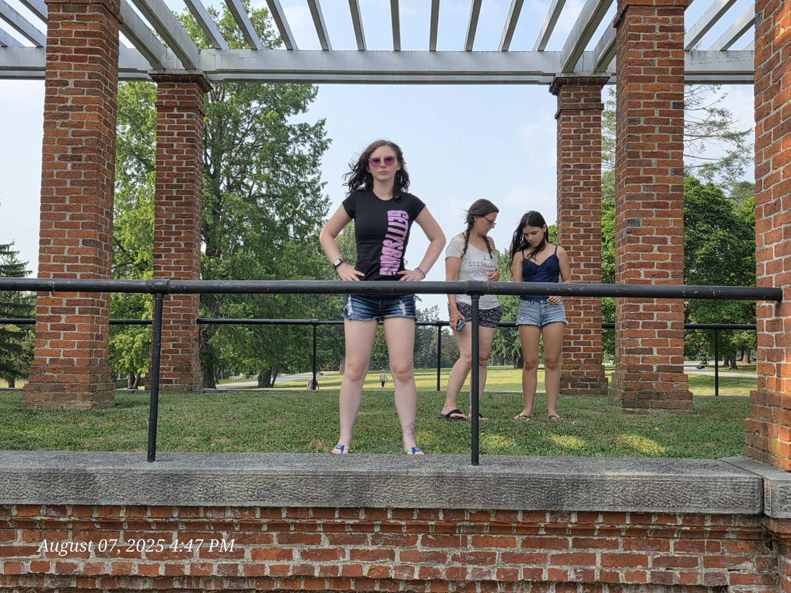
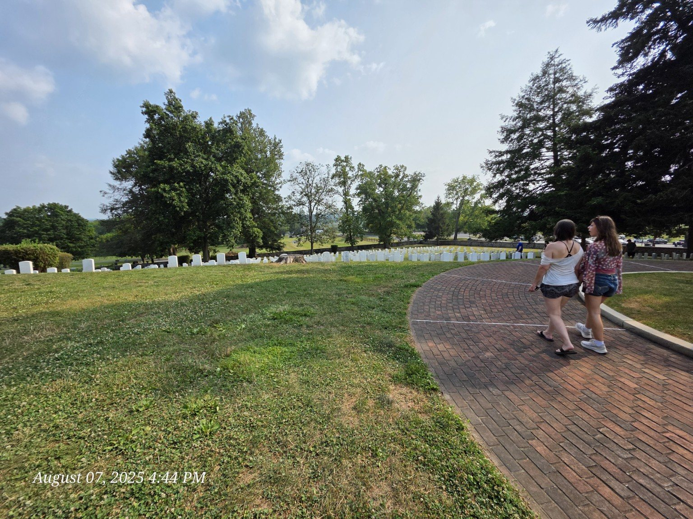
Gettysburg in a bottle
Some of my favorite souvenirs were the old-fashioned Gettysburg sodas. The bottles included Yankee Cola, Rebel Red Birch Beer, Fighting Irishade, Southern Style Vanilla, Root Beer, and Doctor G's 162nd Gettysburg Orange Cream. The drinks disappeared, but the bottles stayed as a colorful reminder of the trip.
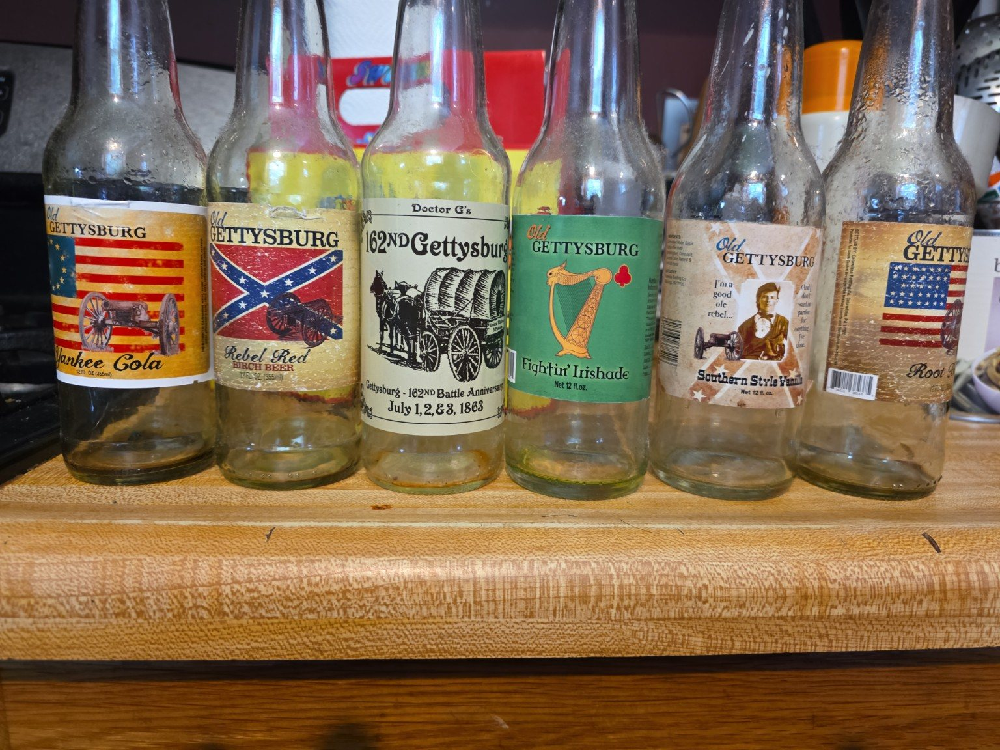
Trail Tater campground review
Sites: Water-and-electric tent sites 30 and 31; site 30 was a roomy corner site.
Staff: Friendly, helpful office/store and maintenance staff.
Facilities: Restrooms and showers were always clean.
Standout feature: Direct trail access toward George Spangler Farm—and a firewood vending machine.
Would we return? Absolutely.
Rating: 🥔🥔🥔🥔🥔
The trip that created Trail Tater
There is one last fact that makes Gettysburg different from every trip that came after it: Trail Tater did not exist yet. We were still tent campers.
Gettysburg showed me how much we loved setting up a family basecamp, spending days exploring history, and coming back together in the evening. It also convinced me that it was time for a camper. That decision eventually led to our 2025 Forest River Rockwood Geo Pro G20BH—the camper that became Trail Tater.
So this is more than a travel journal. It is the origin story of the camper, the website, and the adventures that followed.
It ended by planting the idea that became Trail Tater.
Until next time
Some places are destinations. Others become traditions. Gettysburg is one of those places.
We came for history and left with family memories, sunrise photographs, cemetery visits, an outdoor movie night, a collection of soda bottles—and the beginning of an entirely new way to travel.
I fully intend to return someday.

{kind=link}
{kind=link}
{kind=link}
{kind=link}
{kind=link}
{kind=link}
{kind=link}
{kind=link}
{kind=link}
{kind=link}